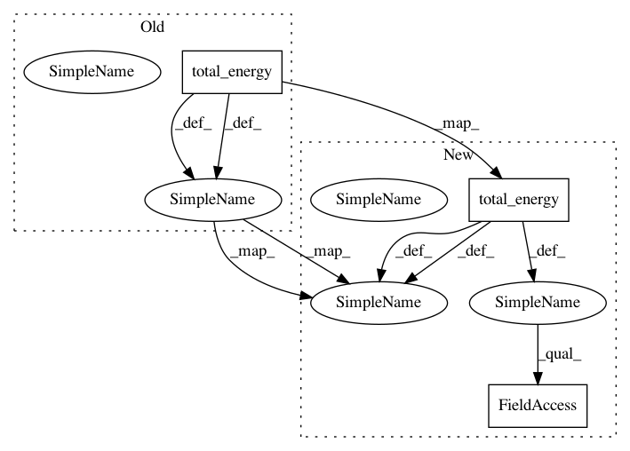

b7693e8420c63bcd7544ee1bc9c2a733408a2794,nilmtk/metergroup.py,MeterGroup,prepare_for_disaggregation,#MeterGroup#,290
Before Change
def prepare_for_disaggregation(self, rule="1T"):
mains = self.mains()
mains_good_sections = mains.good_sections().combined
mains_energy = mains.total_energy(periods=mains_good_sections)
energy_threshold = mains_energy * 0.05
// TODO: should iterate through "most distal" meters
for submeter in self.meters_directly_downstream_of_mains():
After Change
mains = self.mains()
mains_good_sections = mains.good_sections().combined
mains_energy = mains.total_energy(periods=mains_good_sections).combined
energy_ac_type = select_best_ac_type(mains_energy.keys())
energy_threshold = mains_energy[energy_ac_type] * 0.05
// TODO: should iterate through "most distal" meters
for submeter in self.meters_directly_downstream_of_mains():
In pattern: SUPERPATTERN
Frequency: 4
Non-data size: 3
Instances
Project Name: nilmtk/nilmtk
Commit Name: b7693e8420c63bcd7544ee1bc9c2a733408a2794
Time: 2014-05-22
Author: jack-list@xlk.org.uk
File Name: nilmtk/metergroup.py
Class Name: MeterGroup
Method Name: prepare_for_disaggregation
Project Name: nilmtk/nilmtk
Commit Name: 53c72d947033eb10fe8a41c1266c4ada8e996be3
Time: 2014-07-09
Author: jack-list@xlk.org.uk
File Name: nilmtk/metrics.py
Class Name:
Method Name: error_in_assigned_energy